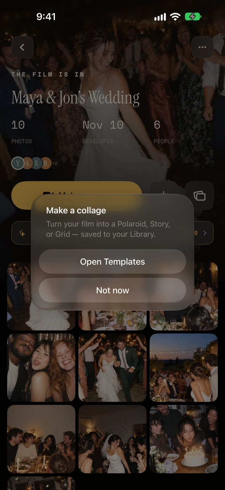

Google Photos Shared Album for a Wedding: Setup and Gotchas
The setup, the QR code, and the settings that can quietly delete guests’ photos.

Short answer: To use a Google Photos shared album for wedding photos, create the album, turn on link sharing and Collaborate, then print the album’s built-in QR code. It’s free and works on iPhone and Android, but guests need a Google Account to add photos, and if you stop sharing later, Google removes everything guests added. Download the album before you change anything.
Google Photos is free, works on any phone and is already installed on a lot of them, which makes it an obvious pick for wedding photos. It also has a handful of gotchas that only show up after the wedding. This guide covers the setup step by step, what guests see with and without a Google Account, storage and quality, album limits, downloading everything afterward, and fixes for the problems couples hit most, plus the Google Drive alternative.
How to set up a Google Photos shared album for wedding guests
Do this the week of the wedding, not the night before, so you have time to test it from someone else’s phone.
On an iPhone or Android phone
- Open Google Photos and sign in with the account that will own the album. Pick the one with the most free storage.
- Touch and hold a photo to start the album with, such as an engagement photo, and tap any others you want in it.
- On an iPhone, tap Add to album, then New album. On Android, tap Create, then Album.
- Name it something guests will recognize, such as your names and the wedding date, and tap Done.
- Open the album, tap Share, then Create link (Google’s iPhone help calls it Get link) to get a link you can send or print.
On a computer
- Go to photos.google.com and sign in.
- On a photo, click Select, then pick any others you want.
- At the top, click Add, then Album, then New album. Type the title and click Done.
- Open the album, click Share and create a link.
Turn on link sharing and Collaborate
Two settings decide whether this works. Link sharing lets anyone with the link open the album, and Collaborate lets them add to it. Google’s help page puts it plainly: if Collaborate is turned on, anyone who has the link to your shared album can add photos.
- iPhone: open the album, tap More, then Sharing settings. Turn on Collaborate, and under Manage access, turn on Link sharing.
- Android: open the album, tap More, then Sharing settings (some phones show Sharing), and turn on Link sharing and Collaborate.
- Computer: open the album, click More, then Options.
While you’re there, decide on Comments & likes. Leaving them on is fun during the week after; turning them off keeps the album quiet.
How to make a QR code for the album
You don’t need a separate generator. On a phone, open the album, tap Share, then Show QR Code. Google’s help page notes that anyone who scans the QR code can access the shared album, and suggests a screenshot if you want to print it.
A phone screenshot is fine for table cards. For a large welcome sign, paste the album link into a QR generator that exports a crisp SVG or high-resolution PNG. Either way, print the code at least 2 inches (5 cm) wide on table cards, with a clean white border around it. One warning: never turn link sharing off and on again after you print. That creates a new link, and the old one on your signs stops working. Our guide to a QR code for wedding photos covers sizes, placement and testing.
What guests see, with and without a Google Account
Anyone with the link can view the album, and Google says that if a contact doesn’t have a Google Account, you can still send them a link. Adding photos is different. A November 2025 walkthrough by Geeks on Tour sums it up: you do need a Google Account username and password to upload. Any email address registered with Google works, not just Gmail.
Here is the flow for an iPhone guest who doesn’t use Google Photos, per that walkthrough:
- They scan the code, and the album opens in the browser with an Add photos option.
- They may be asked to sign in with a Google Account.
- If a screen says it’s better in the app, they can tap Continue on Web.
- They pick photos and tap Add. Google tells them the photos “will be uploaded to your Google Account in Google Photos”.
If a guest already has the Google Photos app, the link may open in the app, which can ask to back up their whole photo library. Guests who don’t want that can skip the app and add photos through the browser, the route the walkthrough recommends. Put the sign-in step on the sign, so nobody is surprised at the table:
Scan to add your photos to our wedding album. You’ll sign in with a Google account (any Gmail works), then tap Add photos. Thank you!
Storage, photo quality and album limits
Whose storage do the photos use?
Each guest’s uploads go into their own Google Account, so they use that guest’s storage, not yours. Google gives each account up to 15 GB of storage, which Gmail and Drive also draw on, so a guest with a full Gmail may be unable to upload. The moment you save their photos into your own library, those copies count toward your storage.
Are the photos full quality?
That depends on each uploader. Google Photos stores files in either Original quality, which keeps the resolution you shot, or Storage saver, which compresses photos and shrinks anything over 16 MP to 16 MP, and resizes video above 1080p to 1080p. When a guest uploads from a browser, their own account’s setting applies. If full-size files matter, ask your keenest photographers to check they’re on Original quality before the wedding.
How many photos can the album hold?
Google’s limit is up to 20,000 photos or videos in an album, which is plenty for a wedding, though Google warns that some features may not be available in a large album. Collaborators who didn’t create the album can only add photos and videos. Only you, the creator, can change everything else.
How to download every photo after the wedding
Order matters here, because the wrong first step can delete guests’ photos.
- Download first. On a computer, open the album at photos.google.com, click the three-dot menu at the top right and choose Download all. Google packages the album as a ZIP file.
- Check the count. Unzip it and compare the number of files with the album.
- Back it up to an external drive or a second cloud.
- Then freeze the album by turning off Collaborate, so nothing new arrives. Keep link sharing on so guests can still look.
What not to do: don’t stop sharing the album, and don’t delete it. Google’s help page says that when you stop sharing, comments and photos that other people added will be removed. Removing people does the same: Google’s page on shared album controls says that when you remove someone from an album, all photos or comments from that person will be removed. A guest who leaves the album takes their photos with them, too.
Two more details. Your computer may stamp downloaded files with the download date, but each photo’s original details stay inside the file, so sort by date taken, not date modified. And skip Google Takeout for this job: it is built for exporting your whole library, while Download all gives you exactly the wedding album.
Google Photos shared album not showing all photos? Try these fixes
| What you see | Likely cause | Fix |
|---|---|---|
| A guest says they added photos, but they aren’t there | They saved the photos to their own library, or to another album | Ask them to open the album link itself, tap Add photos and pick the photos again |
| Guests can see the album but can’t add to it | Collaborate is off | Turn Collaborate on in the album’s sharing settings |
| Photos appear out of order | The album sort order | Open the album, tap Edit album and sort by Oldest, Newest or Recently added |
| One guest’s photos disappeared | That guest left the album, or was removed from it | Don’t remove guests; ask them to rejoin and add the photos again |
| A guest gets stuck at sign-in | No Google Account, or a full one | Offer a backstop, such as an email address or a Dropbox file request |
| The printed QR code opens nothing | Link sharing was turned off and on, creating a new link | Reprint with the new link, or text it to guests |
Some uploads also take a while on venue Wi-Fi or a weak mobile signal. If a guest’s photos are missing the next morning, ask them to open the album from the same phone and check the upload finished.
The Google Drive upload folder alternative
A shared Google Drive folder is the other Google option you’ll see recommended, often as “QR code for wedding photos Google Drive”. It keeps original files, handles long videos well and suits the friend who shot on a real camera. It also asks more of guests:
- Guests need a Google Account. People without one can’t upload into a regular Drive folder, and a Google Form with a file-upload question makes them sign in too.
- Storage works the same way. Files count against the storage of whoever uploaded them.
- There’s no album view. You get a folder of files, which is fine for archiving and dull for browsing on a phone.
Use Drive as the backstop for big files, and Photos, or a shared camera, for the night itself. For other $0 options and their storage limits, see free wedding photo sharing.
When Google Photos is the right choice, and when it isn’t
Google Photos is a good fit when most guests already have Google Accounts, you want a free album everyone can browse, and you’re happy to download everything within a week. It’s a weaker fit when many guests are on iPhones and don’t use Google, when some guests will balk at a sign-in screen, or when you’d rather keep the photos private than open to anyone holding the link. If your crowd is mostly iPhone, Apple’s rebuilt iCloud shared albums are worth a look, and our comparison of all nine ways to collect photos from wedding guests lays out the rest.
A shared camera instead: how Filmsera does it
Filmsera skips the sign-in problem. The host creates a film in the iPhone app and prints its QR code. Guests join in the free Filmsera iPhone app or from their phone’s browser, with no app or account: they type a name and start shooting. Android guests join and shoot in their phone’s browser. Every photo stays hidden until the reveal time you pick, then the whole roll appears at once for everyone in the film, each photo tagged with who took it. Films are invite-only, so only people in the film see its photos.

The trade-offs: the host needs an iPhone, browser guests take photos only, and there’s no live album to browse during the reception, because that’s the point of the reveal. Hosting is free for up to 10 guests, and bigger weddings use a one-time pass for that film; the Filmsera weddings page has the details.
With Filmsera, guests scan one QR code and shoot from their phone’s browser, no Google Account required. Get Filmsera on the App Store
FAQ
Can people without a Google account add photos to a shared album?
They can view the album through the link, but adding photos requires signing in with a Google Account. Any email address registered with Google works, so guests don’t strictly need Gmail. If many of your guests don’t use Google, pair the album with a backstop that takes uploads without an account, or use a shared camera they can join from a phone’s browser.
Do photos added to a shared Google Photos album count against my storage?
Not while they sit in the shared album: each guest’s uploads go into their own Google Account and use their storage. They start counting against yours when you save copies into your own library. Every Google Account includes up to 15 GB of storage, which Gmail and Drive share, so check your free space before saving a whole wedding’s worth.
How many photos can a Google Photos shared album hold?
Up to 20,000 photos or videos, according to Google’s album help page. That is plenty for a wedding, though Google notes that some features may not be available in large albums. If you are worried about space, the real limit is storage: each contributor’s uploads use their own Google Account storage.
How do I download all the photos from a Google Photos shared album?
On a computer, open the album at photos.google.com, click the three-dot menu at the top right and choose Download all. Google packages the album as a ZIP file. Do this before you change any sharing settings, because stopping sharing removes the photos other people added. Then turn off Collaborate to stop new uploads.
Why is my Google Photos shared album not showing all photos?
Usually a guest saved photos to their own library instead of adding them to the album, Collaborate is turned off, or the album is sorted in an order that hides new additions. Photos also disappear if the person who added them leaves the album or is removed from it. Ask missing guests to open the album link, tap Add photos, and check the upload finished.
Written by the Filmsera team
Filmsera is a shared disposable camera app for iPhone: create a film for your event, let guests join by QR code from the app or their phone's browser, and open the whole roll together at the reveal. Download on the App Store →
Photos in this article are illustrations created for Filmsera, not customer photos. App screenshots are from Filmsera on iPhone.